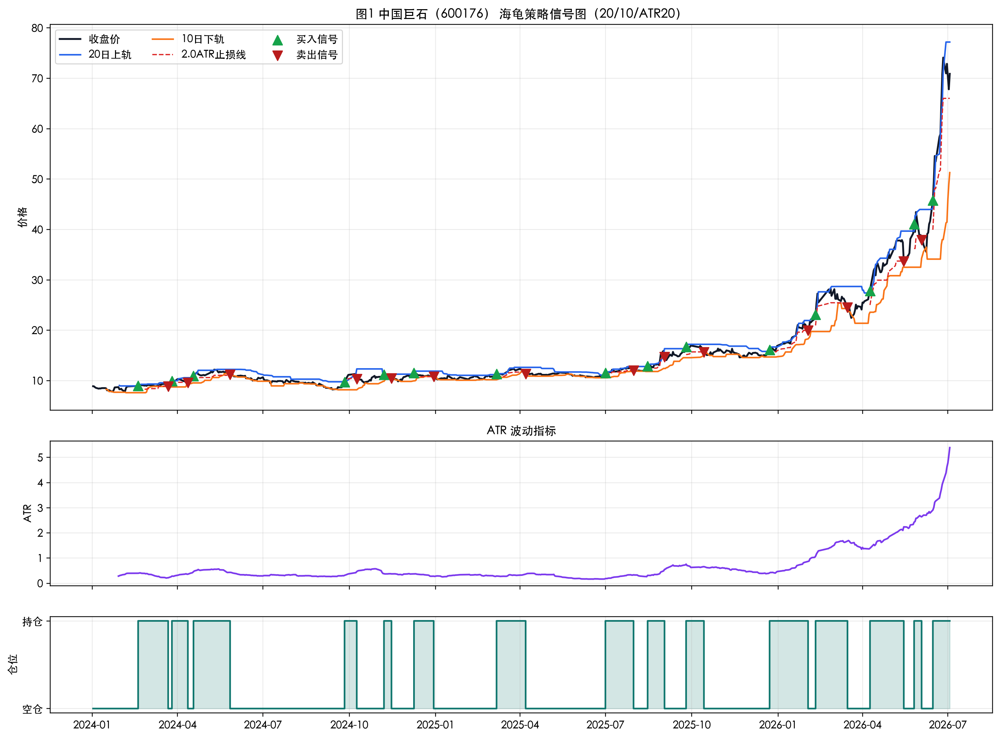
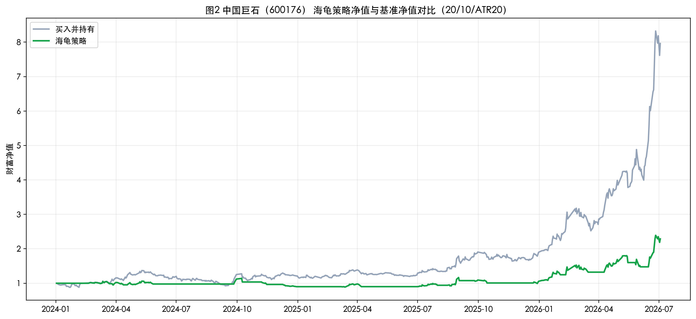
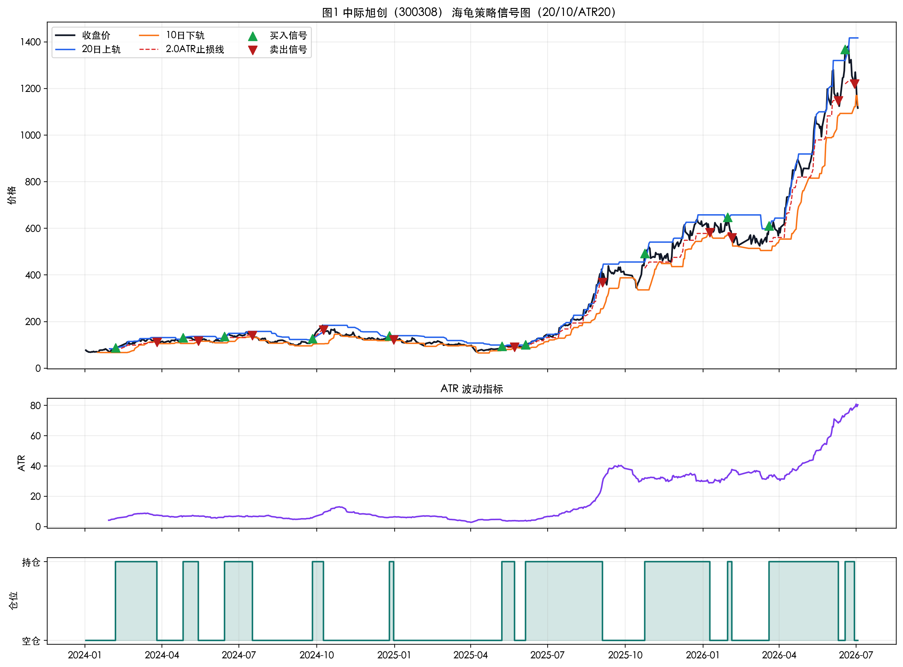
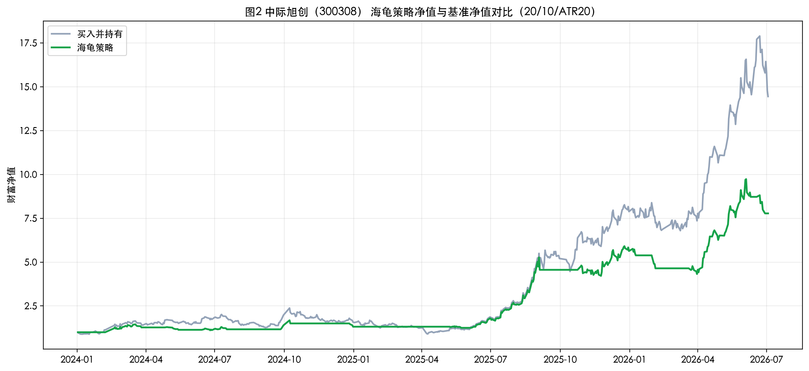
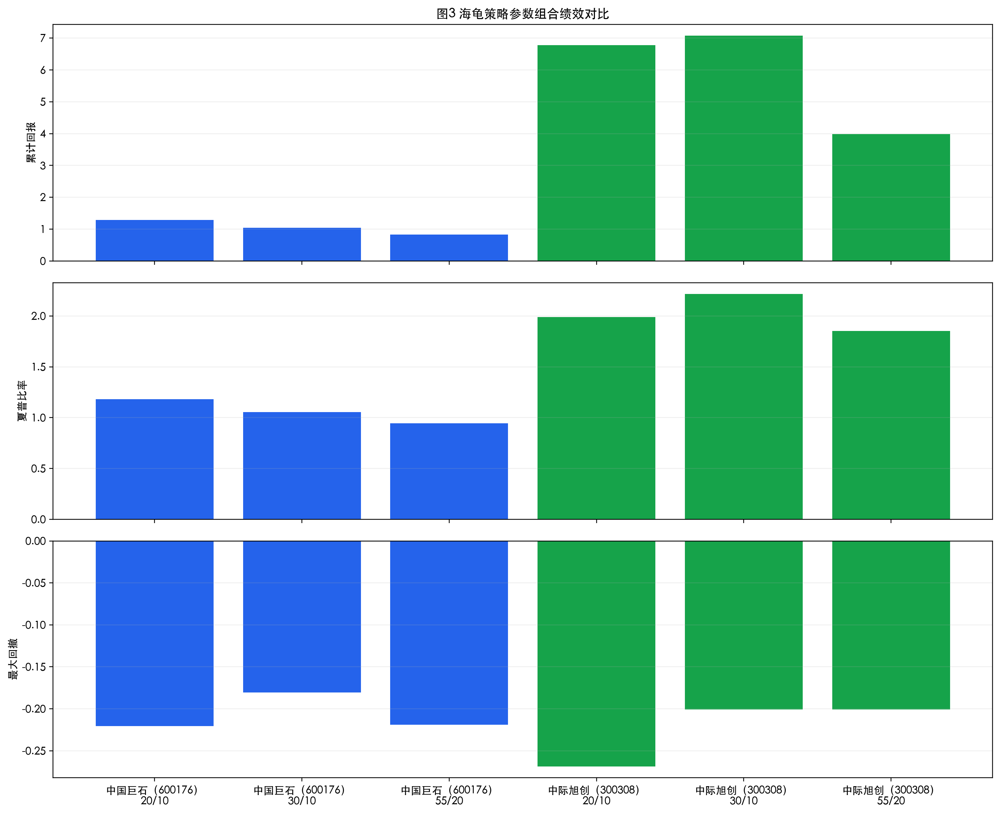

诺拉+TASK4
1. 任务目标
本次 Task4 的目标是在前几次任务完成数据准备、指标构建和双均线回测基础上，进一步理解并实践经典趋势跟随策略，即海龟交易策略。作业重点不只是展示最终收益曲线，而是解释海龟法则中的价格通道、ATR、止损条件以及这些规则如何共同构成一套系统化的交易框架。
2. 海龟策略的核心思想与优势
海龟交易策略的核心思想是“顺势突破、让利润奔跑、用规则控制风险”。其基本逻辑是：当价格向上突破一段时间内的最高价通道时，视为趋势开始，执行买入；当价格跌破退出通道或触发 ATR 止损时，执行卖出。
- 完全规则化，减少主观判断干扰。
- 更适合趋势行情，能捕捉中期以上的波段收益。
- 使用 ATR 作为波动尺度，使止损规则具有自适应性。
- 便于参数比较、回测评估与后续优化。
3. 核心概念说明
3.1 高低点通道
高低点通道是海龟策略的基础。常见做法是用过去若干天的最高价和最低价构成价格通道。上轨代表过去 N 天的最高价，下轨代表过去 N 天或更短退出窗口内的最低价。本次实验采用经典的 20 日上轨突破入场、10 日下轨跌破离场 作为默认参数，并额外测试 30/10 和 55/20 两组通道长度。
3.2 ATR（Average True Range）
ATR 是平均真实波幅，用于衡量市场波动程度。它不是方向指标，而是波动指标。ATR 越大，说明近期价格振幅越大，市场更活跃；ATR 越小，说明市场相对平稳。本次实验先计算每日真实波幅 TR，再对 TR 做 20 日移动平均，得到 ATR20。
3.3 止损条件
海龟策略中常见的止损方式，是按 ATR 设定波动性止损。本次实验采用 止损线 = 当前价格 - 2 × ATR。当持仓后价格跌破 10 日下轨，或跌破 2ATR 止损线时，视为卖出信号。这样可以让止损尺度随市场波动强弱自适应变化。
4. 数据与回测设置
- 标的 1：中国巨石（600176）
- 标的 2：中际旭创（300308）
- 数据区间：2024-01-02 至 2026-07-03
- 数据来源：前几次任务中已保存的前复权日线数据
- 回测方式：仅做多，不做空
- 默认参数：20 / 10 / ATR20 / 2N
- 执行假设：当日根据收盘价与通道关系生成信号，次日按持仓状态计入收益，以避免未来函数偏差
- 交易成本：本次基础实验中未加入手续费和滑点
5. Python 实现流程
- 加载已存储的股价数据
- 计算高低点价格通道
- 计算真实波幅 TR 与 ATR
- 生成买入、卖出和止损信号
- 绘制股价、通道、ATR、持仓与交易信号图
- 对策略进行模拟交易与回测
- 计算累计回报、最大回撤和夏普比率等绩效指标
6. 回测结果汇总
| 股票 | 参数组合 | 累计回报 | 最大回撤 | 夏普比率 |
|---|---|---|---|---|
| 中国巨石（600176） | 20 / 10 / ATR20 / 2N | 128.69% | -22.07% | 1.18 |
| 中国巨石（600176） | 30 / 10 / ATR20 / 2N | 104.07% | -18.06% | 1.05 |
| 中国巨石（600176） | 55 / 20 / ATR20 / 2N | 83.22% | -21.90% | 0.94 |
| 中际旭创（300308） | 20 / 10 / ATR20 / 2N | 677.89% | -26.86% | 1.99 |
| 中际旭创（300308） | 30 / 10 / ATR20 / 2N | 707.66% | -20.08% | 2.22 |
| 中际旭创（300308） | 55 / 20 / ATR20 / 2N | 398.76% | -20.08% | 1.85 |
7. 图表展示与解读

图1 展示了中国巨石在默认参数下的收盘价、20 日上轨、10 日下轨、ATR 止损线以及买卖信号。可以看到，价格向上突破上轨后形成买入信号；后续若跌破离场通道或止损线，则执行卖出。

图2 显示中国巨石在默认海龟策略下累计回报约为 128.69%，最大回撤约为 -22.07%。这说明该股票在样本期内存在可捕捉的趋势行情，同时整体风险也较可控。

图3 反映出中际旭创的波动明显更大，因此 ATR 曲线也更高。突破发生后，策略收益扩张更快，但由于波动强，止损和通道离场的触发也更敏感。

图4 表明中际旭创在默认参数下累计回报约为 677.89%，夏普比率约为 1.99。这一结果说明海龟策略在强趋势高弹性标的上可能获得更高收益，但同时也要承受较明显的波动与回撤。

图5 对比了两只股票在三组参数下的累计回报、夏普比率与最大回撤。整体看，中际旭创在 30/10/ATR20/2N 下表现最佳，而中国巨石在默认参数下表现更均衡。
8. 不同参数与股票类型的观察
- 海龟策略更适合趋势明确、能持续突破的重要行情。
- 波动大的股票在突破成功时收益更高，但 ATR 也更大，对止损和回撤管理提出更高要求。
- 较短的入场通道更灵敏，能更快入场，但可能更容易受到市场噪声影响。
- 较长的通道能过滤部分假突破，但会减少交易次数，也可能错过一部分趋势早段收益。
9. 海龟法则的适应场景与使用心得
海龟法则更适合趋势性较强的市场，也适合愿意耐心等待突破并持有趋势的交易者。通过本次实验可以看出，海龟策略的核心不是预测，而是等市场给出突破后再跟随；ATR 的引入使止损规则不再固定，而是随波动自适应变化；同一套规则在不同标的和不同参数下的表现差异明显，因此必须结合标的特征与风险偏好做比较，不能机械套用。
10. 局限与后续改进
- 本次回测未加入手续费、滑点和仓位加减仓规则。
- 仅做多，未扩展到做空场景。
- 未进行样本外测试与滚动参数检验。
后续可以继续加入海龟法则中的分批加仓逻辑，增加交易成本与滑点约束，并将海龟策略与均线、RSI、布林带等指标结合，形成组合过滤规则，进一步提升策略的稳定性和现实可操作性。
附注：本 HTML 版用于本地预览和 GitHub 展示；正式提交时优先使用同目录下的 PDF 文件。